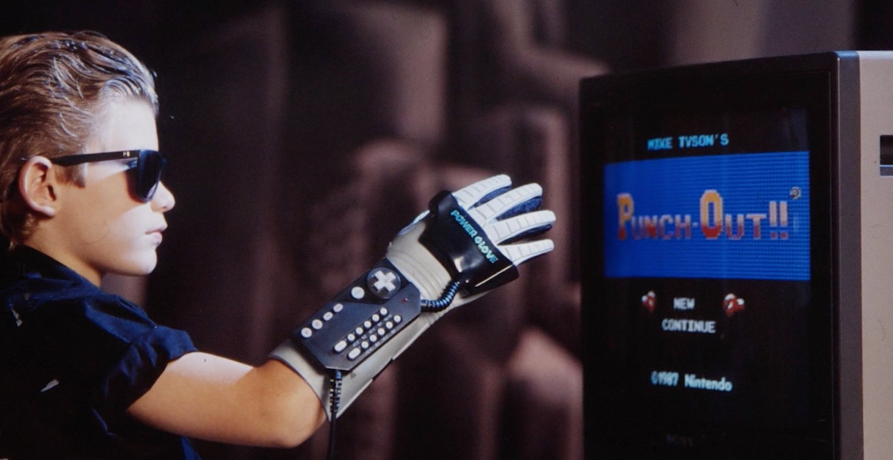

Power Glove
A $10,000 NASA glove, shrunk to $90

Overview
The Power Glove was an officially licensed, third-party controller accessory for the Nintendo Entertainment System (NES). Marketed as a futuristic, gesture-based way to play games, it tracked hand position and finger bending and mapped them to NES inputs. It sold strongly at launch — around one million units in North America and roughly 1.3 million worldwide including Japan — but was widely criticized for imprecise controls, difficult calibration, and a lack of dedicated software. Today it is remembered as both a famous flop and an early mass-market experiment in wearable motion control.
Deep dive
The Power Glove originated outside Nintendo. Abrams/Gentile Entertainment (AGE) licensed technology from VPL Research. VPL’s DataGlove was a high-end research instrument used by NASA and others, costing around $10,000. AGE, together with Mattel as manufacturer, aimed to produce a consumer version for the NES boom. Mattel engineers had roughly nine months to shrink a $10,000 lab device into a toy with about $26 worth of parts.
The glove was worn on the right hand and contained: Conductive-ink flex sensors on four fingers (the pinky was omitted to save cost), giving roughly four positions per finger. Ultrasonic transmitters/receivers to track hand roll and position in 3D space. A keypad on the forearm with traditional NES buttons plus programmable buttons 0–9. A serial connection to the NES.
Only two games were released specifically for the glove: Super Glove Ball and Bad Street Brawler. The glove appeared prominently in the 1989 film The Wizard, where Lucas Barton declares, “I love the Power Glove. It’s so bad.”
Despite its commercial failure, the Power Glove is often cited as a precursor to later motion controllers (Wii Remote, PlayStation Move, Kinect) and as an early affordable entry point for hobbyist VR experiments. 1990s VR enthusiasts used the glove with shareware such as REND386.
The design was inspired by the RoboCop franchise. Mattel reportedly took 700,000 retailer orders after a CES demo where much of the on-screen action was staged with an Amiga and an actor pretending to play. Nintendo required the glove to survive 10 million finger bends before granting its Seal of Quality. A 2019 documentary, The Power of Glove, chronicles its history.
Team & pioneers
- Thomas G. Zimmerman VPL Research engineer who invented the original DataGlove technology licensed for the Power Glove.
- Abrams/Gentile Entertainment (AGE) New York toy-design firm contracted by Mattel to turn the DataGlove into a mass-market NES controller in nine months.
- Grant Goddard and Samuel Cooper Davis Designers at AGE credited with the industrial design and engineering of the consumer glove.
- Mattel Produced and marketed the Power Glove as a $90 holiday accessory, selling roughly 1.3 million units.
- Nintendo Licensed the glove for the NES but provided little software support, contributing to its rapid decline.
Media

Sources
- Wikipedia, “Power Glove.”
- ACMI, “The promise of the Nintendo Power Glove.”
- Jake Rossen, “An Oral History of Nintendo's Power Glove,” Mental Floss, 22 Feb 2017.
- HowStuffWorks, “How the Nintendo Power Glove Worked.”
- Design News, cover story, 4 Dec 1989 (PDF via Microsoft Research/Bill Buxton collection).